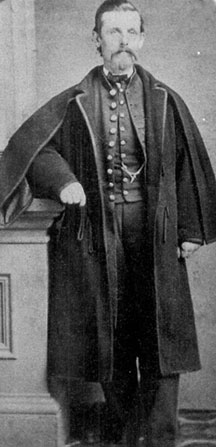

|

NAME: Theodore Blakely
BORN: 1831
DIED: 1864
ALLEGIANCE: Union
HIGHEST RANK: Captain
UNIT: 58th Pennsylvania Infantry, Company B
RECORD: Enlisted on September 15, 1861. Fought in the Battle of
Drewry's Bluff, May 15-16, 1864, and in the Second Battle of Cold
Harbor, June 1-3, 1864. Killed in the Battle of Chaffin's Farm,
September 29, 1864.
|
|
Early on the morning of September 29, 1864, a division of
Union soldiers marched into the teeth of the Confederate
defenses at Petersburg, Virginia. Among the Yankees eager to
break the Rebel lines and end the drawn-out siege of the
city was Theodore Blakely, captain of Company B of the 58th
Pennsylvania Infantry.
An eternity had passed, it seemed, since Blakely had been
living outside Philadelphia with his wife and three
children. He owned a fabric business and made a pretty fair
living. Then the war came, and everything changed. Blakely
supported the Union cause and decided he would fight for it.
Armed with a commission as a second lieutenant, Blakely was
mustered into the 58th on December 10, for three years.
Perhaps because of his knack for managing a business, he
proved to be a good officer and quickly rose to company
captain.
A veteran of nearly three years by the time his regiment
engaged at Petersburg, the 33-year-old Blakely led his
company into the worst fight it had ever seen. The objective
was Fort Harrison, a Rebel bastion that anchored the
Confederate lines and provided cover for Rebel batteries and
units in the area. At the very spear-point of the massive
Federal assault column, the 58th fought its way through
extensive Rebel trenches and earthworks and charged the
fort.
Reaching the top of the fort's walls, the Union soldiers
exchanged heavy fire with Confederate troops from Virginia
and Tennessee. Blakely reached the top just as the
regiment's color bearer went down. The captain picked up the
flag and rallied his men. With a shout, he turned and
charged forward--right into the path of a Confederate
bullet. Blakely fell dead.
The Federals captured Fort Harrison, but gained little
else from the Battle of Chaffin's Farm, as the action became
known. The Siege of Petersburg would continue for another
six months. Soldier life in the trenches settled into one of
routine--boiling coffee, taking occasional potshots at the
enemy, and ducking stray shells. It was pure monotony, but
it was survival. Theodore Blakely would have welcomed it.
Source: Civil War Times Illustrated
39:3 (June 2000), 88.
|